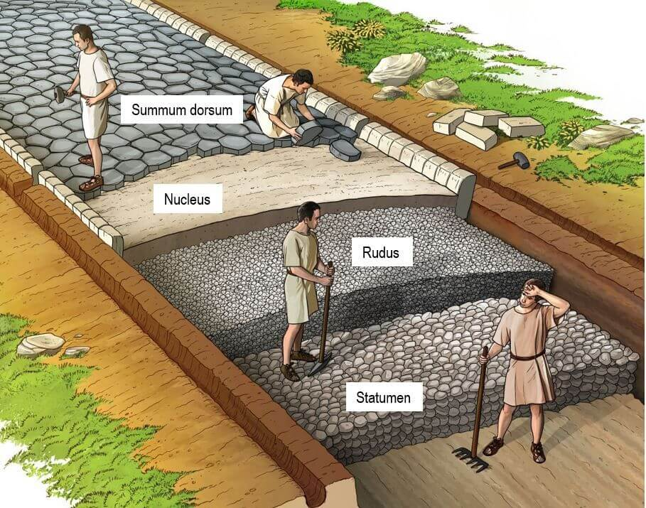
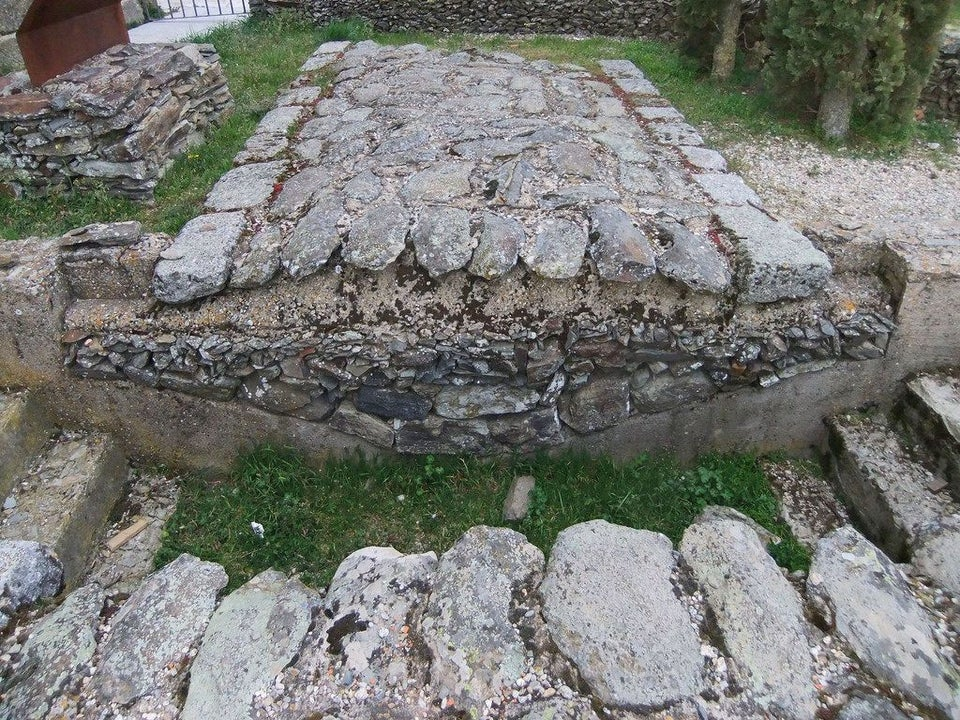
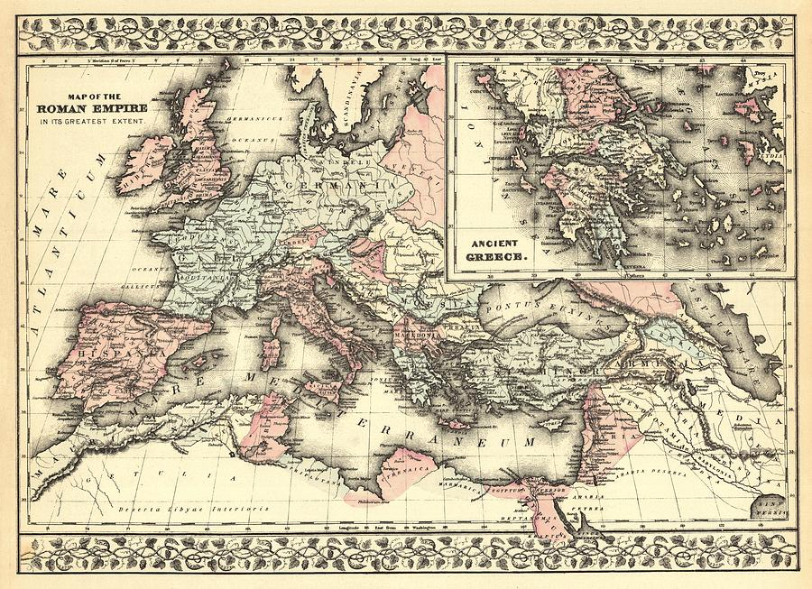
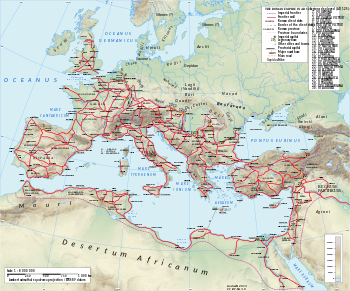
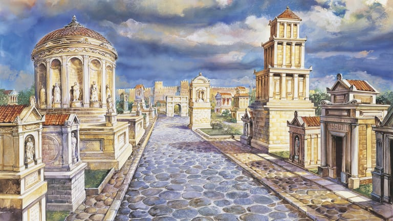

In this gallery we will show the process of building an Ancient Roman road. This process was very well planned and executed. At one point in time they could built 25 miles of road in 30 - 40 days.We will also show maps of where the Roman roads were in ancient times.
This image shows the different layers that are built upon to make the road. Starting with digging a trench and placing different sized stones inside the large trench.
Here is a cross section picture of a real life Roman road showing the different sized stones.
As you can see from this photo the Roman empire was massive and the military needed to travel all around this map, you can see why the roads were needed.
This shows the network of roads that spread around the empire. You can see where the saying all roads lead back to Rome!
This drawing is made to show what the roman roads may have looked like at the time of their prime usage.